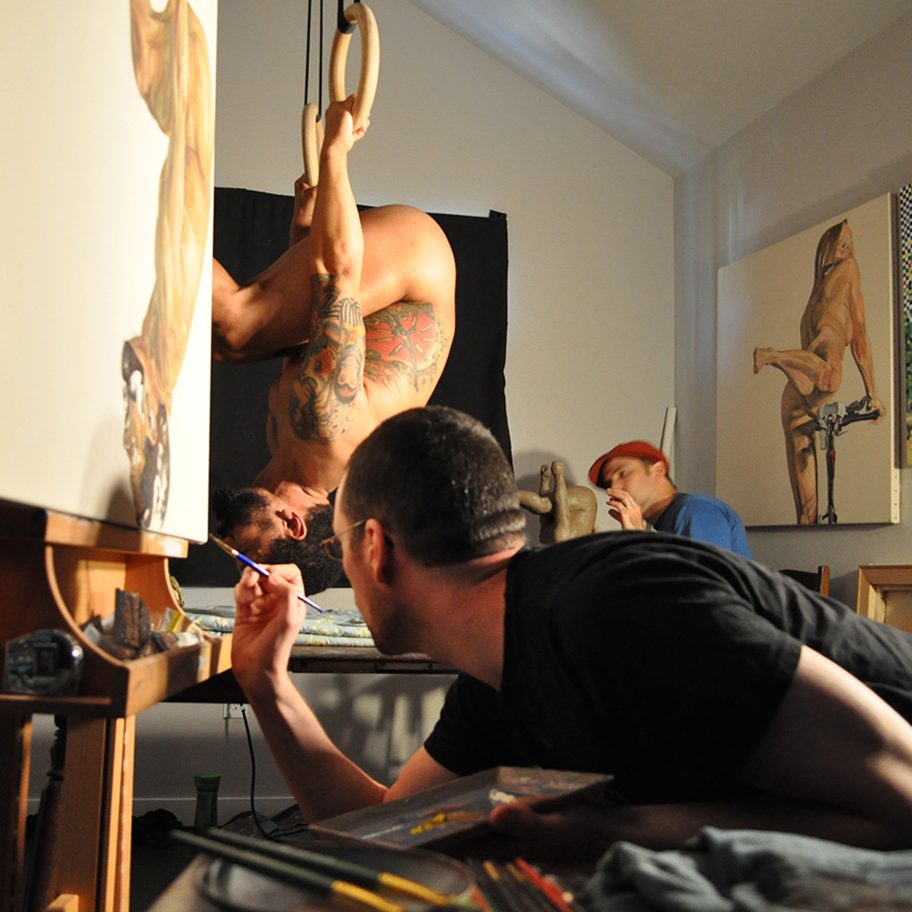

Paul Rutz Interview
Veteran Background
Jonas Blanchard
Trillium Honors
12/15/16
Interview Goes here
Veteran Background
Jonas Blanchard
Trillium Honors
12/15/16
J: Today is December 11th, the interviewer is Jonas Blanchard and the interviewee is Paul Rutz. The reason that I am interviewing you is because you are a veteran, you were in the navy, right?
P: Yeah, I was. Do you want me to talk about my service start to finish, or…?
J: Start to finish is good.
P: Okay, I had two jobs on an aircraft carrier first as an Air Transfer Officer who was in charge of keeping track of things coming in by plane. This included people, parts, mail, if it came by air we were in charge of it. In that job I dealt with schedules, strike operations, essentially what we were going to do on a day to day basis and so I did a lot of work with the strike ops. planners to make sure that everything worked out. I would write a coded message every day to tell planes on land our location, and when to depart and land and all the planes had cargo, like senators and the press, or a jet part or just mail, that was the jist of my job. Then I got promoted, and I did a job as an Air Operation Watch Officer. We are the only navy that does landings at night and in bad weather, and the way we do that is that we have a control station below deck, that manages the incoming and outgoing planes. Below deck there is a room where two Air Ops. Officers sit at desks with some phones and a huge map of the immediate area around the aircraft carrier, there we would keep track of weather and temperature and wind direction and all the things necessary to land planes. They could call the bridge, where the captain was, and the landing deck, where the planes were. In that job you continuously talked with the captain, who controlled the ship, and who constantly had to move the ship. It was always an argument between the the Air Ops. and the captain, the captain had to move the ship because we were going into another country’s waters, and we had to stay still because someone's plane was broken and had to land at that second. In the Air Operation Watch room there were large plexiglass screens, about ten feet high, and had columns and rows to show the ships surrounding area. We were on one side of the glass and on the other were sailors with headphones being relayed plane positions, they were writing those positions on the plexiglass backward so we could see the incoming and outgoing planes. We saw an array of info on the screens, so after a few days of working you get the big picture and can see all of the information and process it.
J: Could you talk about your work as a painter.
P: That’s my job now, so for a while I was working for the Pentagon in press services, so I thought about how we convey combat action. I was interested in knowing how we as the military convey to the public what the war was like. I went to grad school to get a phd in visual theory, I did a dissertation on combat art. Painting was the standard but I also studied poetry and dancing and so on, and one of the choreographers that I interviewed had a system where she took veterans and dancers and made them work together to have an action dialogue. These guys learned how to deal with PTSD and talked with people who they wouldn’t have known each other if not for the choreographer. That idea stuck with me as I got into painting. So me and a sculptor worked together to have veterans come to us and let us do portraits and sculptings of them. We talked with them and we used the artwork as an excuse to have a dialogue with veterans. The artwork we made was showcased in Portland and Vashon Island, and went to the Oregon military museum in Clackamas.
J: What did you learn while doing these projects?
P: I learned two levels of things, one about doing a project of that size, and I learned a lot about that but what I want to highlight is that two, I learned that I’m in a demographic, I’m white and male and somewhat tall, and that makes me walk in this world in a particular way. If I was a short, asian, woman I would have a different way of walking through the world, different ways of interacting with people and so on. Then there are different things that we do, be it a job we do or parenthood, and that is what I found is that I am a veteran and I have a particular way of seeing things, a veteran way, and it is strange to see yourself locked into a way of seeing. It’s like being in a club that you didn’t know you were choosing, but you were in it from early on. And that was something that I was shocked to notice in myself. Now I am trying to transcend that, so that yes I was a veteran but I am going to grow my hair out and not just vote based on veteran issues. I see ways that people interact with veterans, and don’t help veterans in need, and it’s strange to be maybe the only veteran my colleagues know, because these clubs are so far apart in America right now. During that show we pushed to say that this exists to bring people who care about art and people who care about veterans and veterans issues together, where they would not normally be in contact together.
J: So the art that you do now, what is your goal with your art? What do you want to accomplish?
P: There are people who think that art is propaganda and should drive people’s way of seeing the world and I don’t see it that way at all. I think when I work I’m learning a ton, and when I show work I’m learning a ton, because I expect my art to make people see something, and that isn’t what actually happens, they see something else, something I couldn’t see. When I am at the gallery openings and I watch people see my art, I adjust my way of interpreting the art because of their different ways of seeing that I am exposed to. Art showcases are a great way of making us adjust ourselves, If we do compelling work, If that makes any sense. My goal is to make art that can stand up to repeated viewing and can make people have a dialogue around it, also that I can adjust my viewing of the art after people have seen it, and if I can’t then I am a man trying to make propaganda.
J: So let’s go back to you being a veteran, what do people say to you about it?
P: If I’m at New Seasons on a tuesday getting the veteran discount, they just say ‘thank you for your service’ and that tells me that that is what people say when they don’t know what to say. I understand that it’s meant with good intentions, but it is also vacuous. It’s the ‘hi how are you’ without caring for the broken tire and the problem with the toddler. With people I know I don’t tell them for a while, not because I want to keep it a secret, because it never comes up and when I tell them it is usually met with surprise or a world of questions. When we talked about being a demographic, because of the choices you make and realizing after the fact that you put yourself there, I think there are things that I see in the world that others don’t see, camouflage and faux uniforms on coaches drives me nuts. I think that’s terrible, and I don’t think you know that is going on but there is a militarization and a hero worship thing that goes on in sports a lot these days, and I think it makes a cartoon of the military, it doesn’t really ask us to deal with each other who do that job. It’s a very Captain America way of seeing military service, a ‘thank you for your service I’m going to wear a camouflage hat’ is to me pretty empty and it is almost a way of saying I don’t want to know what it’s like because I don’t want to think too hard about what my role in that is. I try to duck that conversation, because many people don’t want to have that conversation, ‘where do my taxes go, and what have we been doing in syria lately?’ and those are hard questions.
J: So, what do you think of depictions of war in movies and media?
P: Like I said, there is a lot of essentially making cartoons of soldiers and seamen and airmen, I think there is an effort from people to try not to do that, like people saying that some veterans are homeless, and on the radio this morning Portland was named by the federal government to end veteran homelessness, and the people who did this are really proud, and they did a tremendous job applying our liberal values in this area, and using that to help people who are public servants or former public servants. I don’t see that happening everywhere, but there are people trying, in the media and the news, in movies, to show a more rounded complicated group of people, one percent of americans serve in the military, and most of them are from a particular geographical and socio-economic area, and lots of us have to try hard to imagine what it is like with veterans, if you are not already exposed to them. It is very fashionable to say how good the military is, and for a president elect to bring a whole lot of generals to his cabinet, because the public will think that those guys will get it done, but it is more complicated than that, and I look forward to the media trying to show that fact.
J: Okay, that was the last question. Do you want to say anything else?
P: No, but thank you for inviting me to do an interview.
J: You’re welcome. Bye.